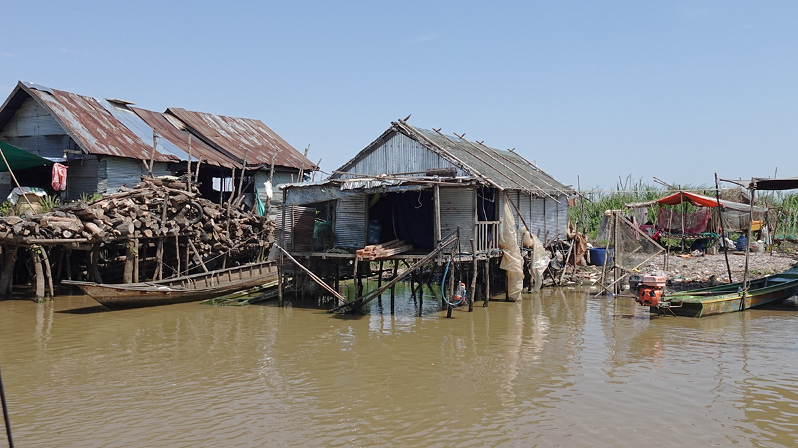

Spatial Design
Designing for
Floating Villages
in Cambodia
During my year-long Princeton in Asia fellowship, I created and taught project-based design classes to Cambodian students as a Learning Facilitator at AUPP Liger Leadership Academy in Phnom Penh, Cambodia.
In one of the courses I designed, I wanted to teach the design process as a tool for problem-solving to my students. I also wanted to expose them to existing ways in which design has been used to address various issues in Cambodia, from sustainable architecture to low-cost bio-sand water filters for purifying water or strategic waste water systems for maintaining health in floating villages in Siem Reap.
I called the course 'Design for Impact,' and essentially acted as a teacher and project manager by leading design research, mockups and prototyping various design solutions with students, specifically aimed at exploring how we might design solutions to problems faced by communities living in floating villages. I had chosen floating villages as the context for the challenges we aimed to address, since designing for flooding and water safety seems to be an issue that will only become more prevalent in Cambodia and beyond with the effects of climate change.
This course included taking my students on trips to various design firms in Phnom Penh to learn from design professionals, volunteering with NGOs in Siem Reap, visiting Moat Khlar floating village and Kampong Khleang floating village, to interview villagers and understand their challenges, collaborating with international organizations and building prototypes with local materials to address identified challenges. We documented our field research and interviews in videos that I facilitated students to film and edit.
"Give a man a fish and you feed him for a day; teach a man to fish and you feed him for a lifetime."

.png)